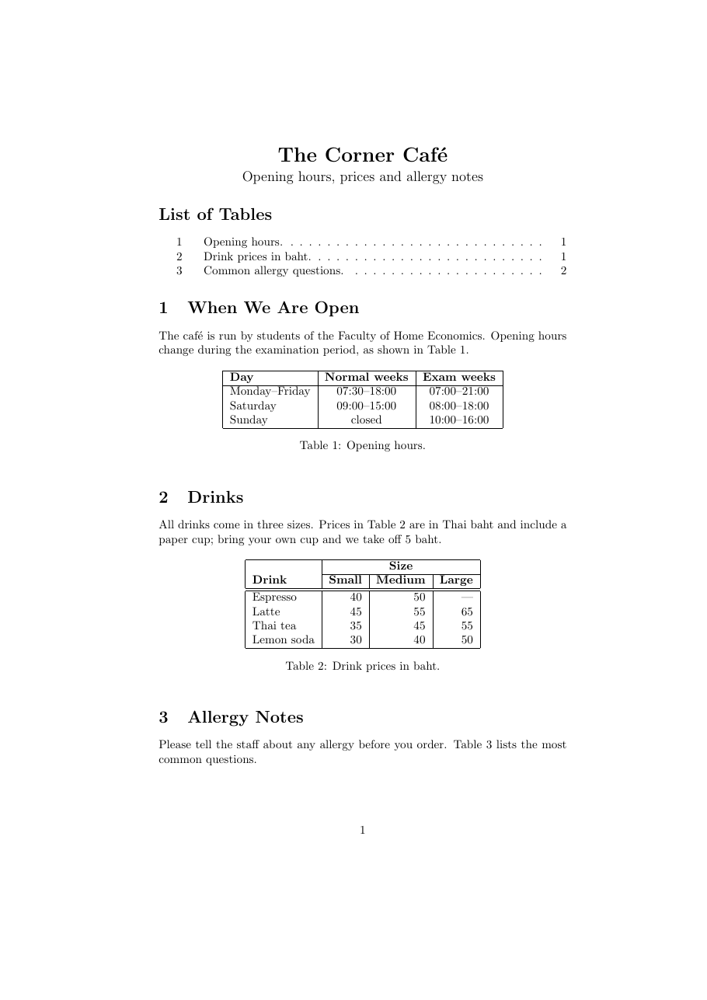
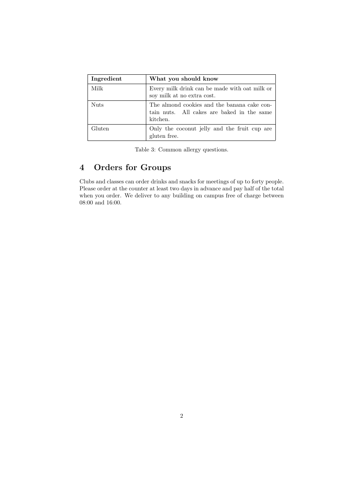

วัตถุประสงค์
เมื่อจบ Workshop นี้ นักศึกษาจะสามารถ
- สร้างตารางด้วยสภาพแวดล้อม
tabularโดยใช้&คั่นช่อง และ\\จบแถวได้ - กำหนดการจัดแนวของคอลัมน์
l,c,rและคอลัมน์แบบย่อหน้าp{...}ได้ - ตีเส้นตารางด้วย
|,\hlineและ\clineและรวมช่องในแนวนอนด้วย\multicolumnได้ - ทำตารางเป็นรูปแบบลอยตัวด้วย
tableพร้อม\caption,\label,\refและ\listoftablesได้ - อ่านข้อความผิดพลาดที่เกิดจากตารางได้
ไฟล์ที่ได้รับ
ดาวน์โหลด tables.zip แล้วแตกไฟล์ไว้ในที่ที่หาง่าย จะได้โฟลเดอร์ tables ดังนี้
tables/
├── doc.pdf ชิ้นงานต้นแบบ (2 หน้า)
├── warmup.tex ไฟล์สั้น ๆ สำหรับ Part A
├── main.tex ไฟล์เริ่มต้นสำหรับ Part B
└── content.txt เนื้อหาทั้งหมดของ Part B (ข้อมูลตารางคั่นด้วย |)ดูไฟล์แยกทีละไฟล์ได้ที่
warmup.tex,
main.tex,
content.txt
เตรียมเครื่อง
ประมาณ 5 นาทีใช้เครื่องมือชุดเดียวกับ Workshop ก่อนหน้า เปิดโฟลเดอร์ tables ใน Sublime Text และเปิดเทอร์มินัลในโฟลเดอร์เดียวกัน
Workshop นี้ไม่ต้องเรียกแพ็กเกจเพิ่ม
& ของทุกแถวให้ตรงกันด้วยการเว้นวรรคใน Sublime Text ตารางในไฟล์ .tex จะอ่านง่ายขึ้นมาก และเห็นทันทีว่าแถวใดมีช่องเกินหรือขาด
ช่องว่างเหล่านี้ไม่มีผลต่อผลลัพธ์
อุ่นเครื่อง
ประมาณ 35 นาทีไฟล์ warmup.tex มีรายการผลไม้ที่ยังเป็นข้อความธรรมดา ทำทีละข้อ บันทึก คอมไพล์ และสังเกตผล
- A0 แทน 4 บรรทัดของรายการผลไม้ด้วยตาราง
\begin{tabular}{l l r} Fruit & Colour & Price \\ Apple & red & 25 \\ Banana & yellow & 10 \\ Mango & yellow & 40 \\ \end{tabular}{l l r}บอกอะไร ตัวเลขในคอลัมน์สุดท้ายจัดแนวแบบใด - A1 เปลี่ยนเป็น
{c c c}และ{r l l}แล้วเปลี่ยนกลับเป็น{l l r}ตัวเลขราคาควรจัดแนวแบบใดจึงอ่านง่ายที่สุด เพราะอะไร
- A2 เส้นตาราง เปลี่ยนเป็น
{|l|l|r|}ใส่\hlineก่อนแถวแรก หลังแถวหัวตาราง และหลังแถวสุดท้าย จากนั้นลอง\hline\hlineใต้หัวตาราง และ{||l|l|r||}เส้นแนวตั้งกับเส้นแนวนอนกำหนดคนละที่อย่างไร
- A3 เพิ่มคอลัมน์ที่ 4 ชื่อ
Noteโดยใส่ข้อความยาว ๆ ในแถว Mango เช่นOnly in April and May, when the farms near Chachoengsao harvest them.ใช้ชนิดคอลัมน์lก่อน แล้วเปลี่ยนเป็นp{4cm}คอลัมน์
lทำอะไรกับข้อความยาว และp{4cm}แก้ปัญหาอย่างไร - A4 ตารางลอยตัว ครอบตารางด้วย
แล้วแก้ประโยค\begin{table}[htbp] \centering ... ตารางเดิม ... \caption{Fruit prices.} \label{tab:fruit} \end{table}Prices are in baht per kilogram.เป็นPrices in Table~\ref{tab:fruit} are in baht per kilogram.และใส่\listoftablesใต้\begin{document}คอมไพล์ 2 ครั้งคำบรรยายตารางขึ้นต้นด้วยคำอะไร และ
\listoftablesต่างจาก\listoffiguresใน Workshop รูปภาพและสี อย่างไร - A5 รวมช่อง เพิ่มแถวใหม่เหนือหัวตาราง ให้คำว่า
Detailsคร่อมคอลัมน์ที่ 2 และ 3& \multicolumn{2}{c|}{Details} & \\ \cline{2-3}\multicolumn{จำนวนคอลัมน์}{การจัดแนวและเส้น}{ข้อความ}รวมช่องในแนวนอน ส่วน\cline{2-3}ตีเส้นเฉพาะคอลัมน์ 2 ถึง 3ทำไมต้องเขียน
c|ในอาร์กิวเมนต์ที่ 2 แทนcลองเอา|ออกแล้วดูผล - A6 ใส่
\renewcommand{\arraystretch}{1.5}ไว้ในtableก่อน\begin{tabular}ค่านี้เปลี่ยนอะไร และทำไมจึงไม่กระทบตารางอื่นนอก
tableนี้ - A7 ทำให้ผิดโดยตั้งใจ เพิ่มช่องเกินในแถว Apple เป็น
Apple & red & 25 & extra \\(เมื่อตารางมี 3 คอลัมน์) แล้วคอมไพล์! Extra alignment tab has been changed to \cr. <recently read> \endtemplate l.16 Apple & red & 25 & extra \\ ?ข้อความผิดพลาดบอกว่าเกินที่ช่องไหน ถ้ากด Enter ต่อ คำว่า extra ไปอยู่ที่ใด
- A8 แก้ข้อ A7 กลับ แล้วพิมพ์
Our fruit & vegetable stallในย่อหน้าแรก (นอกตาราง)! Misplaced alignment tab character &. l.10 Our fruit & vegetable stall sells fruit from local farms. The list belo...ต้องเขียนเครื่องหมาย
แก้ไฟล์กลับให้คอมไพล์ผ่านก่อนไปต่อ (หมายเลขบรรทัดของแต่ละคนอาจไม่ตรงกับตัวอย่าง)&นอกตารางอย่างไร (ทบทวนอักขระพิเศษจาก Workshop การจัดรูปแบบข้อความ)
& และ \\ ทำหน้าที่อะไรในตาราง (2) ต่างกันอย่างไรระหว่าง tabular กับ table
(3) เมื่อใดควรใช้คอลัมน์ p{...} และ (4) \multicolumn มีอาร์กิวเมนต์อะไรบ้าง
งานหลัก
ประมาณ 55 นาทีเปิด main.tex และคัดลอกเนื้อหาจาก content.txt มาวาง เพื่อสร้างประกาศของร้านกาแฟ 2 หน้าให้เหมือน doc.pdf มากที่สุด คอมไพล์ 2 ครั้งด้วย
$ pdflatex main.tex
$ pdflatex main.tex

คำแนะนำ
ทำทีละตาราง ตารางยากขึ้นตามลำดับ ใน content.txt ข้อมูลแต่ละช่องคั่นด้วย | ให้เปลี่ยนเป็น & และจบแถวด้วย \\
| ส่วนของชิ้นงาน | สิ่งที่ต้องใช้ |
|---|---|
| หัวเรื่อง | center, \LARGE, \large จาก Workshop การจัดรูปแบบข้อความ (ตัว é พิมพ์ได้ตรง ๆ หรือเขียน Caf\'e) |
| List of Tables | \listoftables และคอมไพล์ 2 ครั้ง |
| Table 1 | {|l|c|c|}, \hline 3 เส้น, หัวตารางตัวหนา, ช่วงเวลาใช้ขีด -- |
| Table 2 | {|l|r|r|r|}, \multicolumn สำหรับคำว่า Size, \cline, เส้นคู่ \hline\hline ใต้หัวตาราง, ขีดยาว --- |
| Table 3 | คอลัมน์ p{0.25\textwidth} และ p{0.6\textwidth} พร้อมเส้นทุกแถว และ \arraystretch เท่ากับ 1.3 |
| ทุกตาราง | table ตำแหน่ง [htbp], \centering, \caption ใต้ตาราง, \label และ \ref ในเนื้อความ |
คำใบ้เพิ่มเติม (เปิดดูเมื่อติด)
- แถวแรกของ Table 2 มีช่องแรกว่าง เริ่มแถวด้วย
&ได้เลย - ใน
\multicolumn{3}{c|}{...}ต้องใส่|ด้านขวาเอง เพราะช่องที่รวมแล้วไม่ใช้เส้นจากหัวtabular - Table 3 ในต้นแบบลอยไปบนสุดของหน้า 2 ไม่ต้องบังคับให้อยู่หน้า 1
- ถ้าความกว้างของ Table 3 ล้นขอบ ให้ตรวจว่าผลรวมความกว้างคอลัมน์ไม่เกิน
\textwidth(เส้นและช่องว่างรอบช่องก็กินที่ด้วย)
ส่งงาน
เปลี่ยนชื่อไฟล์เป็น tables_<รหัสนักศึกษา>.tex แล้วคอมไพล์ใหม่ 2 ครั้งด้วยชื่อนั้น ส่งทั้งไฟล์ .tex และ .pdf
รายการตรวจสอบก่อนส่ง
ท้าทาย
ไม่บังคับ · ประมาณ 20–30 นาทีทำเพิ่มในไฟล์ใหม่ (คัดลอกจากงาน Part B) ข้อใดก็ได้
- C1 ย้าย
\captionของทุกตารางไปไว้เหนือตาราง (ตามธรรมเนียมของงานวิชาการหลายแห่ง)คำบรรยายกับเส้นบนของตารางชิดกันเกินไปหรือไม่ แก้ด้วย
\vspace{4pt}หลัง\captionได้อย่างไร - C2 ใช้แพ็กเกจ
multirow(\usepackage{multirow}) ทำให้คำว่าDrinkใน Table 2 คร่อม 2 แถวด้วย\multirow{2}{*}{\textbf{Drink}}และลบแถวว่างที่ไม่ใช้ออก - C3 ใช้
\usepackage[table]{xcolor}แล้วระบายสีหัวตารางด้วย\rowcolor{gray!20}หรือช่องเดียวด้วย\cellcolor{yellow!30} - C4 สร้างตารางสอนของตัวเองในภาคเรียนนี้ (วัน × ช่วงเวลา) โดยวิชาที่เรียนต่อเนื่องหลายช่วงใช้
\multicolumn
ข้อผิดพลาดที่พบบ่อย
| อาการ | สาเหตุและวิธีแก้ |
|---|---|
! Extra alignment tab has been changed to \cr. |
แถวมี & มากกว่าจำนวนคอลัมน์ที่ประกาศไว้ใน {...} ของ tabular |
! Misplaced alignment tab character &. |
ใช้ & นอกตาราง ให้เขียน \& |
! LaTeX Error: \begin{tabular} on input line ... ended by \end{document}. |
ลืม \end{tabular} |
! LaTeX Error: Illegal character in array arg. |
สะกดชนิดคอลัมน์ผิด เช่น {|l|m|r|} หรือ {p4cm} ที่ลืมวงเล็บปีกกา |
! Misplaced \noalign. |
ใช้ \hline โดยแถวก่อนหน้ายังไม่จบด้วย \\ |
| เส้นแนวตั้งขาดเป็นช่วง ๆ | บางแถวมีช่องน้อยกว่าคอลัมน์ หรือ \multicolumn ไม่มี | ในอาร์กิวเมนต์ที่ 2 |
ตารางล้นขอบขวา (Overfull \hbox) |
ข้อความยาวในคอลัมน์ l หรือ c ใช้คอลัมน์ p{...} แทน |
เห็น ?? แทนหมายเลขตาราง |
คอมไพล์อีกครั้ง หรือตรวจว่า \label อยู่หลัง \caption |
แหล่งอ้างอิง
- สไลด์บทเรียน Figures and Tables ส่วน Tables (Tabular Environment, Adding borders, Column Aligning, Positioning Tables, List of Tables, Merging Cells and Partial Lines)
- The Not So Short Introduction to LaTeX (เปิดด้วย
texdoc lshort) หัวข้อ 2.11.6 Tabular และ 2.13 Floating Bodies